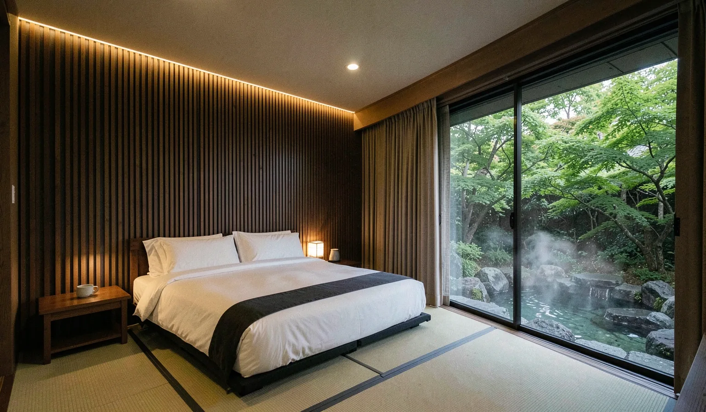
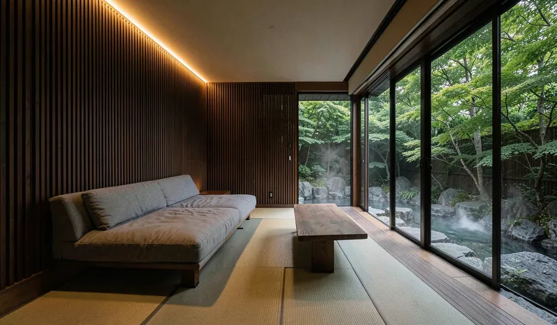
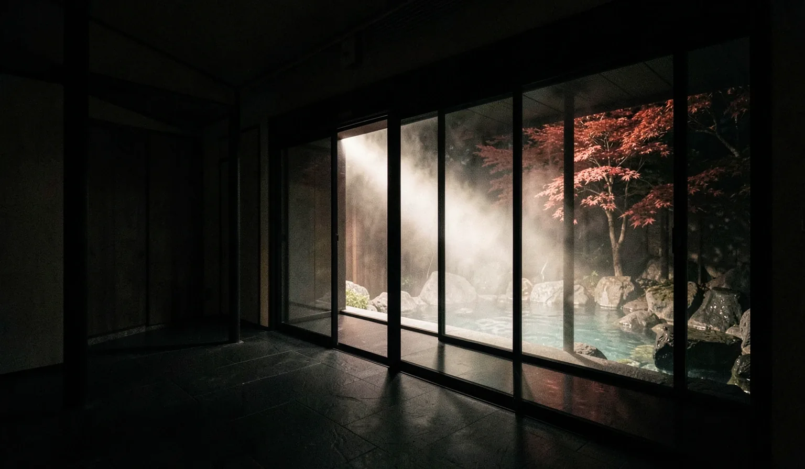
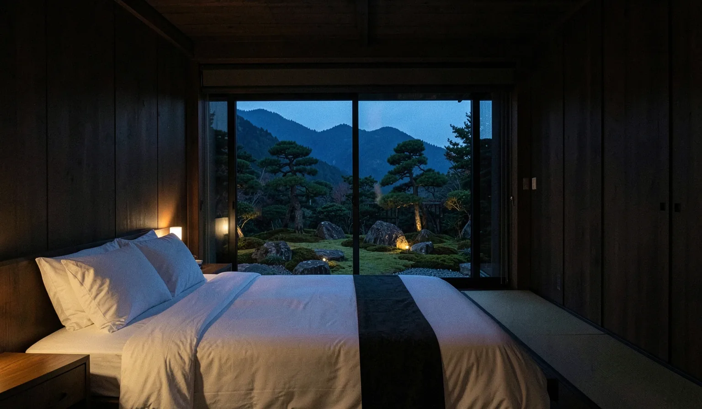
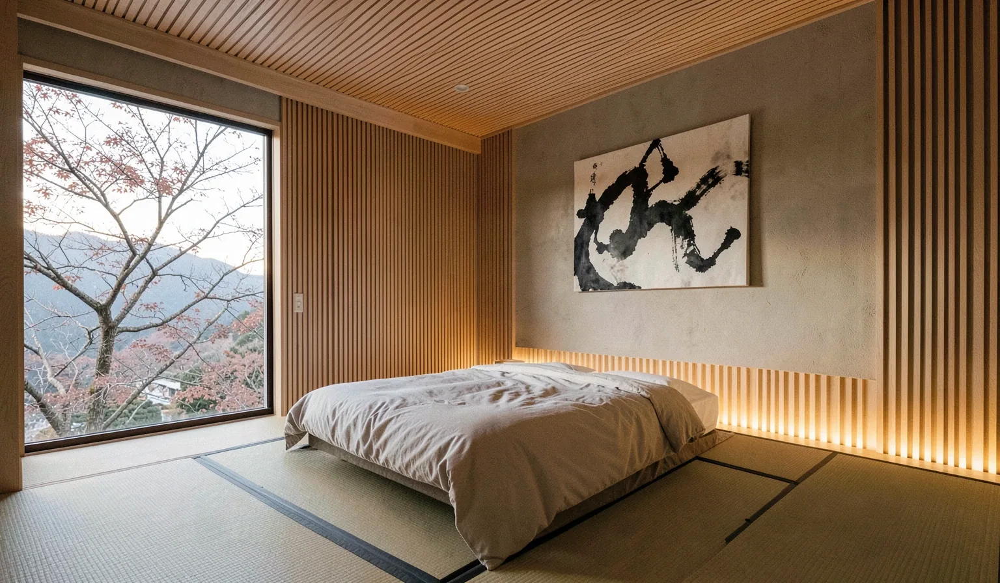

VILLA — 01
湯庭の離れ
縦格子の板壁に囲まれた居間と寝室、その先の石のテラスに源泉を引いた岩風呂。夜更けも朝も、誰にも会わずに湯へ出られる、霧音でいちばん奥の三棟です。
- 棟数
- 3棟
- 広さ
- 78㎡（居間・寝室・専用露天風呂）
- 定員
- 2〜3名
- 料金
- 1泊2食 お一人様 68,000円〜



ROOMS
離れは杉の森のなかに一棟ずつ、間に木立をはさんで建てています。本館の四室も、窓の向きをすべて違えました。どの部屋からも、見えるのは森と空と湯けむりだけです。
VILLA — 01
縦格子の板壁に囲まれた居間と寝室、その先の石のテラスに源泉を引いた岩風呂。夜更けも朝も、誰にも会わずに湯へ出られる、霧音でいちばん奥の三棟です。


VILLA — 02
壁一面の窓の外は、苔と石と松だけの庭。日が落ちると庭の灯りがともり、部屋の明かりを消すと、窓が一枚の絵になります。湯は、すぐ脇の貸切露天風呂へ。

MAIN HOUSE
墨の書を一枚掛けただけの、余白の部屋。畳に低いベッドを置き、窓からは谷の向こうの山並みを。はじめての方にも、ひとり旅の方にも。
